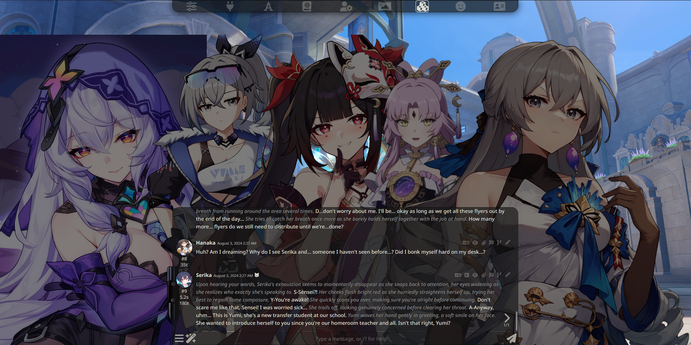

#
Visual Novel (VN) Mode
Visual Novel Mode is a special screen layout in SillyTavern that allows you to chat to characters with sprites (or their character card image) that resembles that of a visual novel like Doki Doki Literature Club, The Fruits of Grisaia, Fate: Stay/night and other famous VN games.
#
Toggling Visual Novel Mode
#
Enabling Visual Novel Mode
Visual Novel Mode comes built in with SillyTavern and can be toggle by going to User Settings (User Settings Icon) and checking Visual Novel Mode below No Text Shadows.
#
Disabling Visual Novel Mode
Disabling Visual Novel Mode is the same steps as enabling it. Untoggle Visual Novel Mode and you should be back to the normal chat screen itself.
Regarding VN Mode with VN Extensions
Some extensions (like the Prome VN Extension) will toggle 'Visual Novel Mode' on if you use their own respective VN modes. Enabling/Disabling VN Mode from the User Settings menu will also affect these extensions as well.
#
The Visual Novel UI
In Visual Novel Mode, the UI is altered slightly in order to accommodate character sprites (or the character card image) which is shown in the center. In a group chat with multiple characters however, the character sprites will spread themselves out, accommodating for each other as shown below.
#
VN Mode with MovingUI
To toggle MovingUI, go to User Settings and check on MovingUI. Do note that this feature only works on Desktops.
If MovingUI is enabled in User Settings, the sprites (or character card image) can be moved around if you wish to move them around or place them in a more specific area on the screen.
Regarding Sprite Sizes
If the size of your character sprites are relatively big it will be a challenge to try and move certain sprites around with MovingUI as the button to drag sprites around might be covered underneath a existing sprite. You will probably have to move them around a bit more than normal, especially if there is more characters on the screen for better placement.
#
Obtaining Character Sprites
Obtaining character sprites can be done by browsing the internet for existing sprites, for say, a existing character from a Visual Novel or a game that uses a Visual Novel feature such as DDLC or CounterSide. If the character you desire sprites form does not come with sprites already, you have several options remaining.
Search the character post for any sprite ZIP package or link to a sprite pack.
Some bot creators may release their bots with a sprite pack (either within the same post or in a sprites channel). Search those posts if someone hasn't made sprites of the character you want already.
Create your own using LoRAs and Stable Diffusion.
Generating sprites from scratch is time-consuming (especially if no LoRAs exist for your character and/or for the Stable Diffusion model you want to use) and will require decent hardware in order to generate them, more so if you plan on making 28 sprite expression than 6 and if you are using SDXL and/or upscaling sprites to a more higher resolution.
Use the character card image. It might not be like a sprite, but at least you have something to look at on-screen. However, multiple character cards cannot be used in VN mode.
Character Card Images with the Prome Visual Novel Extension
With the Prome Visual Novel Extension 1.0.6+, there is a feature called
Emulate Character Card as Spritethat allows you to have a group chat with both sprite and non-sprite characters by using their character card as a sprite in chat.
#
VN Extensions
#
Prome Visual Novel Extension
The Prome Visual Novel Extension is an endorsed third-party extension from Bronya Rand and Prometheus that enhances the visual novel experience in SillyTavern even further with features such as Letterbox Mode which makes the visual novel UI more "cinematic", Focus Mode with Darken Character Sprites, Traditional VN Mode where only the last message in chat appears in chat and more planned to come!
To install the Prome Visual Novel Extension, you can either install by going to Download Extensions & Assets and finding Prome Visual Novel Extension, or follow the installation instructions on the Prome Visual Novel Extension Github page. Adjusting Prome's settings can be found either in Extensions -> Prome (Visual Novel Extension) or via the 🪄 (Wand) menu.